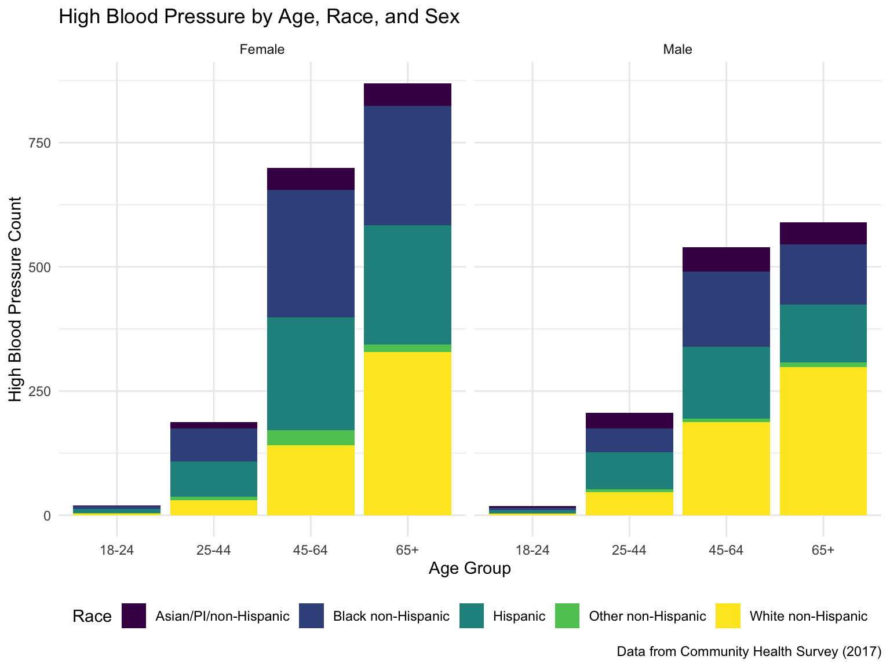
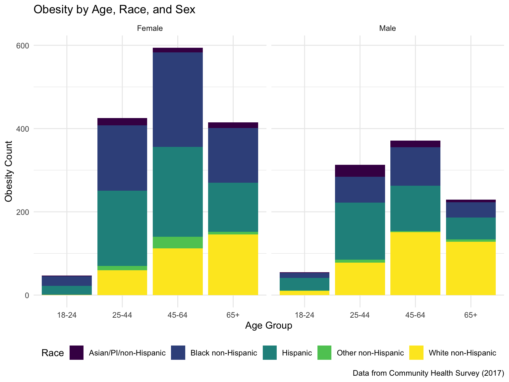

Data Analysis
library(tidyverse)## ── Attaching packages ───────────────────────────────────────────────── tidyverse 1.2.1 ──## ✔ ggplot2 3.2.1 ✔ purrr 0.3.3
## ✔ tibble 2.1.3 ✔ dplyr 0.8.3
## ✔ tidyr 1.0.0 ✔ stringr 1.4.0
## ✔ readr 1.3.1 ✔ forcats 0.4.0## ── Conflicts ──────────────────────────────────────────────────── tidyverse_conflicts() ──
## ✖ dplyr::filter() masks stats::filter()
## ✖ dplyr::lag() masks stats::lag()library(patchwork)
library(haven)
library(gganimate)
library(gifski)
library(ggplot2)
data <- read_sas("data/chs2017_public.sas7bdat")
knitr::opts_chunk$set(
echo = TRUE,
warning = FALSE,
fig.width = 8,
fig.height = 6,
out.width = "90%"
)
options(
ggplot2.continuous.colour = "viridis",
ggplot2.continuous.fill = "viridis"
)
scale_colur_discrete = scale_colour_viridis_d
scale_fill_discrete = scale_fill_viridis_d
theme_set(theme_minimal() + theme(legend.position = "bottom"))data_clean =
data %>%
select(imputed_foodinsecure, toldhighbp17, diabetes17, weight17in4, currdepress, agegroup, sex, newrace) %>%
mutate(
imputed_foodinsecure = recode(imputed_foodinsecure,
"1" = "0",
"2" = "0",
"3" = "1",
"4" = "1"),
imputed_foodinsecure = as.numeric(imputed_foodinsecure),
toldhighbp17 = recode(toldhighbp17,
"1" = "1",
"2" = "0"),
toldhighbp17 = as.numeric(toldhighbp17),
diabetes17 = recode(diabetes17,
"1" = "1",
"2" = "0"),
diabetes17 = as.numeric(diabetes17),
weight17in4 = recode(weight17in4,
"1" = "0",
"2" = "0",
"3" = "0",
"4" = "1"),
weight17in4 = as.numeric(weight17in4),
currdepress = recode(currdepress,
"1" = "1",
"2" = "0"),
currdepress = as.numeric(currdepress),
agegroup = recode(agegroup,
"1" = "18-24",
"2" = "25-44",
"3" = "45-64",
"4" = "65+"),
sex = recode(sex,
"1" = "Male",
"2" = "Female"),
newrace = recode(newrace,
"1" = "White non-Hispanic",
"2" = "Black non-Hispanic",
"3" = "Hispanic",
"4" = "Asian/PI/non-Hispanic",
"5" = "Other non-Hispanic"),
) %>%
rename("Food_Insecure" = imputed_foodinsecure,
"High_BP" = toldhighbp17,
"Diabetes" = diabetes17,
"Obesity" = weight17in4,
"Depression" = currdepress,
"Age" = agegroup,
"Sex" = sex,
"Race" = newrace) %>%
drop_na()Exploratory Analyses
We assessed the distribution of food insecurity and select chronic health outcomes by age, race, and sex.
##Creating five individual bar charts to represent the distribution of the outcomes against age and race.
plot1 =
data_clean %>%
select(Age, Food_Insecure, Race, Sex) %>%
count(Age, Food_Insecure, Race, Sex) %>%
group_by(Age, Race, Sex) %>%
mutate(
total = sum(n)) %>%
filter(Food_Insecure == "1") %>%
mutate(
Total_Insecure = sum(n),
Proportion = Total_Insecure / total)
plot1 %>%
ggplot() +
geom_col(aes(x = Age, y = Total_Insecure, fill = Race)) +
facet_wrap(Sex ~.) +
labs(
x = "Age Group",
y = "Food Insecure Count",
title = "Food Insecurity by Age, Race, and Sex",
caption = "Data from Community Health Survey (2017)"
)
plot2 =
data_clean %>%
select(Age, Obesity, Race, Sex) %>%
count(Age, Obesity, Race, Sex) %>%
group_by(Age, Race, Sex) %>%
mutate(
total = sum(n)) %>%
filter(Obesity == "1") %>%
mutate(
Total_Obese = sum(n),
Proportion = Total_Obese / total)
plot2 %>%
ggplot() +
geom_col(aes(x = Age, y = Total_Obese, fill = Race)) +
facet_wrap(Sex ~.) +
labs(
x = "Age Group",
y = "Obesity Count",
title = "Obesity by Age, Race, and Sex",
caption = "Data from Community Health Survey (2017)"
)
plot3 =
data_clean %>%
select(Age, Diabetes, Race, Sex) %>%
count(Age, Diabetes, Race, Sex) %>%
group_by(Age, Race, Sex) %>%
mutate(
total = sum(n)) %>%
filter(Diabetes == "1") %>%
mutate(
Total_Diabetes = sum(n),
Proportion = Total_Diabetes / total)
plot3 %>%
ggplot() +
geom_col(aes(x = Age, y = Total_Diabetes, fill = Race)) +
facet_wrap(Sex ~.) +
labs(
x = "Age Group",
y = "Diabetes Count",
title = "Diabetes by Age, Race, and Sex",
caption = "Data from Community Health Survey (2017)"
)plot4 =
data_clean %>%
select(Age, High_BP, Race, Sex) %>%
count(Age, High_BP, Race, Sex) %>%
group_by(Age, Race, Sex) %>%
mutate(
total = sum(n)) %>%
filter(High_BP == "1") %>%
mutate(
Total_High_BP = sum(n),
Proportion = Total_High_BP / total)
plot4 %>%
ggplot() +
geom_col(aes(x = Age, y = Total_High_BP, fill = Race)) +
facet_wrap(Sex ~.) +
labs(
x = "Age Group",
y = "High Blood Pressure Count",
title = "High Blood Pressure by Age, Race, and Sex",
caption = "Data from Community Health Survey (2017)"
)
plot5 =
data_clean %>%
select(Age, Depression, Race, Sex) %>%
count(Age, Depression, Race, Sex) %>%
group_by(Age, Race, Sex) %>%
mutate(
total = sum(n)) %>%
filter(Depression == "1") %>%
mutate(
Total_Depress = sum(n),
Proportion = Total_Depress / total)
plot5 %>%
ggplot() +
geom_col(aes(x = Age, y = Total_Depress, fill = Race)) +
facet_wrap(Sex ~.) +
labs(
x = "Age Group",
y = "Depression Count",
title = "Depression by Age, Race, and Sex",
caption = "Data from Community Health Survey (2017)"
)
Logistic Regression
The association between food insecurity and the following chronic health outcomes were assessed via logistic regression, adjusting for race, sex, age.
Obesity
fit_logistic_obesity =
data_clean %>%
glm(Obesity ~ Food_Insecure + Age + Sex + Race, data = ., family = binomial())
fit_logistic_obesity %>%
broom::tidy() %>%
mutate(OR = exp(estimate),
High_CI = exp(estimate + 1.96*std.error),
Low_CI = exp(estimate - 1.96*std.error)) %>%
select(term, log_OR = estimate, OR, p.value, High_CI, Low_CI) %>%
knitr::kable(digits = 3)| term | log_OR | OR | p.value | High_CI | Low_CI |
|---|---|---|---|---|---|
| (Intercept) | -3.047 | 0.048 | 0.000 | 0.064 | 0.035 |
| Food_Insecure | 0.105 | 1.111 | 0.208 | 1.309 | 0.943 |
| Age25-44 | 0.692 | 1.998 | 0.000 | 2.514 | 1.587 |
| Age45-64 | 0.918 | 2.504 | 0.000 | 3.143 | 1.994 |
| Age65+ | 0.893 | 2.443 | 0.000 | 3.091 | 1.932 |
| SexMale | -0.142 | 0.868 | 0.004 | 0.956 | 0.787 |
| RaceBlack non-Hispanic | 1.703 | 5.490 | 0.000 | 6.896 | 4.371 |
| RaceHispanic | 1.647 | 5.194 | 0.000 | 6.503 | 4.148 |
| RaceOther non-Hispanic | 1.291 | 3.637 | 0.000 | 5.217 | 2.536 |
| RaceWhite non-Hispanic | 1.005 | 2.732 | 0.000 | 3.428 | 2.178 |
High Blood Pressure
fit_logistic_High_BP =
data_clean %>%
glm(High_BP ~ Food_Insecure + Age + Sex + Race, data = ., family = binomial())
fit_logistic_High_BP %>%
broom::tidy() %>%
mutate(OR = exp(estimate),
High_CI = exp(estimate + 1.96*std.error),
Low_CI = exp(estimate - 1.96*std.error)) %>%
select(term, log_OR = estimate, OR, p.value, High_CI, Low_CI) %>%
knitr::kable(digits = 3)| term | log_OR | OR | p.value | High_CI | Low_CI |
|---|---|---|---|---|---|
| (Intercept) | -3.506 | 0.030 | 0.000 | 0.043 | 0.021 |
| Food_Insecure | 0.441 | 1.555 | 0.000 | 1.842 | 1.312 |
| Age25-44 | 1.014 | 2.756 | 0.000 | 3.893 | 1.951 |
| Age45-64 | 2.442 | 11.498 | 0.000 | 16.104 | 8.209 |
| Age65+ | 3.616 | 37.193 | 0.000 | 52.406 | 26.396 |
| SexMale | 0.116 | 1.123 | 0.022 | 1.240 | 1.017 |
| RaceBlack non-Hispanic | 0.930 | 2.534 | 0.000 | 3.059 | 2.100 |
| RaceHispanic | 0.671 | 1.957 | 0.000 | 2.356 | 1.625 |
| RaceOther non-Hispanic | 0.685 | 1.984 | 0.000 | 2.802 | 1.404 |
| RaceWhite non-Hispanic | 0.100 | 1.106 | 0.279 | 1.326 | 0.922 |
Depression
fit_logistic_Depression =
data_clean %>%
glm(Depression ~ Food_Insecure + Age + Sex + Race, data = ., family = binomial())
fit_logistic_Depression %>%
broom::tidy() %>%
mutate(OR = exp(estimate),
High_CI = exp(estimate + 1.96*std.error),
Low_CI = exp(estimate - 1.96*std.error)) %>%
select(term, log_OR = estimate, OR, p.value, High_CI, Low_CI) %>%
knitr::kable(digits = 3)| term | log_OR | OR | p.value | High_CI | Low_CI |
|---|---|---|---|---|---|
| (Intercept) | -2.637 | 0.072 | 0.000 | 0.102 | 0.050 |
| Food_Insecure | 1.487 | 4.422 | 0.000 | 5.291 | 3.695 |
| Age25-44 | -0.202 | 0.817 | 0.178 | 1.096 | 0.609 |
| Age45-64 | 0.033 | 1.034 | 0.820 | 1.378 | 0.776 |
| Age65+ | 0.195 | 1.215 | 0.201 | 1.637 | 0.902 |
| SexMale | -0.264 | 0.768 | 0.000 | 0.890 | 0.663 |
| RaceBlack non-Hispanic | 0.190 | 1.209 | 0.187 | 1.603 | 0.912 |
| RaceHispanic | 0.512 | 1.668 | 0.000 | 2.174 | 1.280 |
| RaceOther non-Hispanic | 0.728 | 2.071 | 0.001 | 3.241 | 1.324 |
| RaceWhite non-Hispanic | 0.202 | 1.224 | 0.144 | 1.607 | 0.933 |
Diabetes
fit_logistic_Diabetes =
data_clean %>%
glm(Diabetes ~ Food_Insecure + Age + Sex + Race, data = ., family = binomial())
fit_logistic_Diabetes %>%
broom::tidy() %>%
mutate(OR = exp(estimate),
High_CI = exp(estimate + 1.96*std.error),
Low_CI = exp(estimate - 1.96*std.error)) %>%
select(term, log_OR = estimate, OR, p.value, High_CI, Low_CI) %>%
knitr::kable(digits = 3)| term | log_OR | OR | p.value | High_CI | Low_CI |
|---|---|---|---|---|---|
| (Intercept) | -4.640 | 0.010 | 0.000 | 0.019 | 0.005 |
| Food_Insecure | 0.399 | 1.491 | 0.000 | 1.823 | 1.220 |
| Age25-44 | 1.291 | 3.638 | 0.000 | 7.189 | 1.841 |
| Age45-64 | 2.824 | 16.851 | 0.000 | 32.759 | 8.668 |
| Age65+ | 3.642 | 38.151 | 0.000 | 74.269 | 19.598 |
| SexMale | 0.233 | 1.262 | 0.000 | 1.432 | 1.113 |
| RaceBlack non-Hispanic | 0.371 | 1.449 | 0.002 | 1.822 | 1.152 |
| RaceHispanic | 0.332 | 1.394 | 0.004 | 1.749 | 1.111 |
| RaceOther non-Hispanic | 0.315 | 1.370 | 0.153 | 2.110 | 0.890 |
| RaceWhite non-Hispanic | -0.627 | 0.534 | 0.000 | 0.674 | 0.423 |
Summary of Logistic Regression Findings
oddsratios_full = tibble(
outcome = c("Obesity", "High BP", "Depression", "Diabetes"),
OR = c(1.111, 1.555, 4.422, 1.491),
pvalue = c(0.208, 0.000, 0.000, 0.000),
Low_CI = c(0.943, 1.312, 3.695, 1.220),
High_CI = c(1.309, 1.842, 5.291, 1.823))
oddsratios_full %>%
ggplot(aes(x = OR, y = outcome, group = 1)) +
geom_vline(aes(xintercept = 1), linetype = "dashed") +
geom_errorbarh(aes(xmax = High_CI, xmin = Low_CI), size = 0.5, height = 0.2) +
geom_point(size = 3.5, color = "orange") +
ylab("") +
xlab("Odds Ratio") +
ggtitle("Food insecurity and odds of select outcomes") +
labs(
caption = "Data from Community Health Survey (2017)"
)